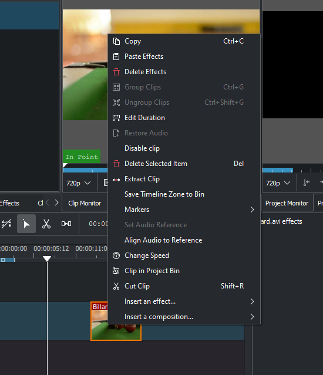

Clip in Timeline - Right-Click Menu¶
This is the context menu that appears when you right-click on a clip in the timeline. A different menu appears if you click in empty space in the timeline.
will copy the clip and selected clips to the clipboard.
will paste only the effects of the last copied clip to the selected clip. See paste_effects.
will remove all effects from the selected clip.
- see Grouping
- see Grouping
- will open the Duration Dialog and will allow you to adjust the position of the clip int he timeline, what time point of the source clip to start on the timeline, the duration of the clip, and what time point of the source clip to end on the timeline. Note that Kdenlive will automatically adjust co-related values.
will add any audio track that is part of the original clip to the timeline
will disable the clip so it will not render in the project monitor or in a final video render.
will remove the clip from the timeline and the space it occupied.

will take the selected timeline zone and add markers to your clips in the project bin.
The markers sub-menu allows you to add, edit and remove markers from your clips that are displayed on the timeline. These markers will move with the clips. See Clip Menu - Markers.
and are used to align two clips on different tracks in the timeline base on the audio in the tracks. This is useful if two cameras recorded the same scene simultaneously. Kdenlive can use the almost identical audio track to align the two clips.
: To use this feature:
:* Select the clip that you would like to align to.
:* Right click, select .
:* Select all the clips that you would like to get aligned.
:* Right-click and select .
will open the change speed dialog that will allow you to increase or decrease the playback speed of a clip, allow you to play the clip in reverse, and will enable / disable pitch compensation for the audio on a speed-adjusted clip.
will highlight the selected clip in the project bin.
Selecting this will cause the selected clip to be cut at the location of the timeline. See also editing.
will open a sub-menu to allow you to quickly add the transform or the Lift/Gamma/Gain effects.
will open a sub-menu to allow you to quickly add the compositeandtransform or the Composition - Wipe composition